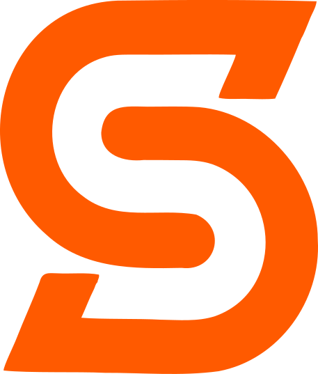
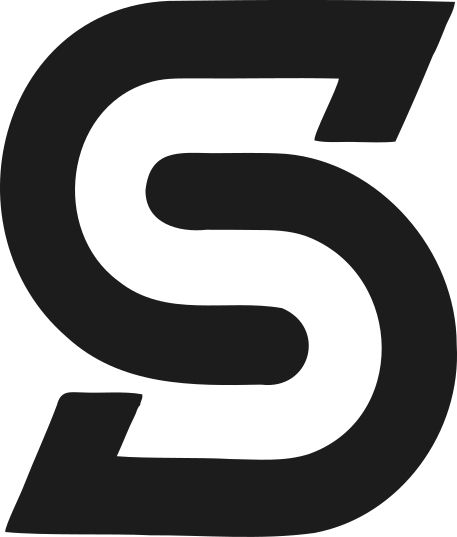

Orange на білому
Основний локап - горизонтальний: марка «S» (векторизована з референсу, суцільний Signal Orange) плюс вордмарк «Stack» (Oswald 700). Нижче - як він побудований по сітці й канону: одиниця x, висота, крок і охоронне поле. Далі - варіанти на світлому, темному та моно.
Уся геометрія прив'язана до одного модуля x - це чверть висоти вордмарка. Марка помітно більша за текст (на 1x: по 0,5x над cap-line і під baseline) і центрована по вертикалі, тож вона тримає око як сильний акцент, але логотип лишається єдиним цілим на спільній осі. Пропорції марки й тексту виміряні зі шрифту, не на око.
Сітка побудови. Крок сітки = x. Вордмарк «Stack» - висота великих літер H = 4x (cap-line - baseline). Марка «S» на 1x вища за вордмарк (5x) і центрована по вертикалі - виступає 0,5x над cap-line і 0,5x під baseline. Оптична ширина марки ≈ 4,3x, проміжок марка - вордмарк = 1x. Ширина слова «Stack» ≈ 11,2x - це інтринсік Oswald 700.
Охоронне поле. Навколо логотипа завжди вільна зона не менша за 1x з кожного боку (біла рамка) - її межа проходить по крайніх точках марки. У це поле не заходять інші елементи, текст чи край макета.
| Одиниця сітки | x = чверть висоти вордмарка |
| Висота вордмарка (H) | 4x (cap-line - baseline) |
| Оптична висота марки «S» | 5x (на 1x вища за вордмарк) |
| Розташування марки | центрована по вертикалі; виступ 0,5x над cap-line і 0,5x під baseline |
| Оптична ширина марки «S» | ≈ 4,3x (пропорція марки 0,85 : 1) |
| Проміжок марка - вордмарк | 1x |
| Вордмарк | «Stack», Oswald 700, title-case; ширина ≈ 11,2x зі шрифту |
| Вирівнювання | по вертикальному центру вордмарка; марка ліворуч |
| Охоронне поле | ≥ 1x з усіх боків |
Нижче цих розмірів марка забивається, а вордмарк втрачає читабельність. На дуже малих плашках (фавікон, аватар) використовуємо тільки марку «S».

Stack Горизонтальний локапТі самі побудова й канон на всіх поверхнях. Orange на світлому - основний; на charcoal - реверс білою маркою; моно charcoal - для одноколірного друку.

